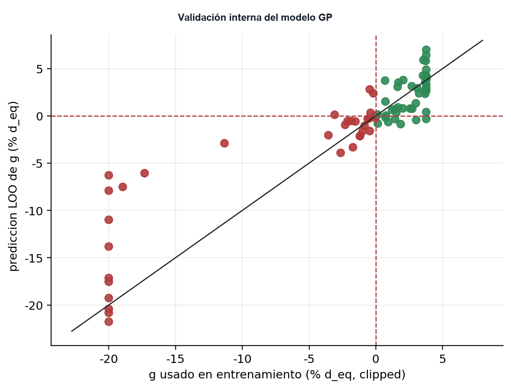
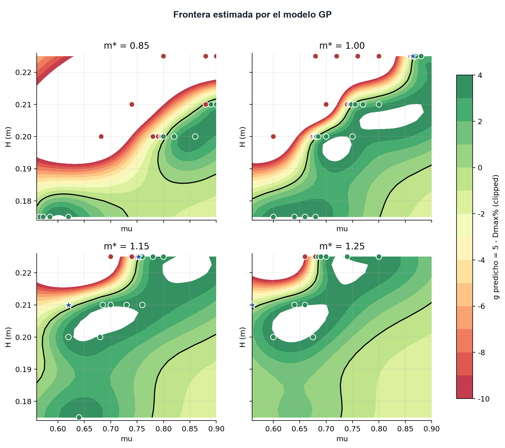
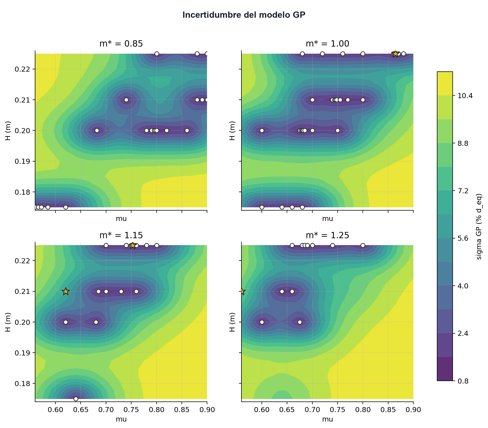
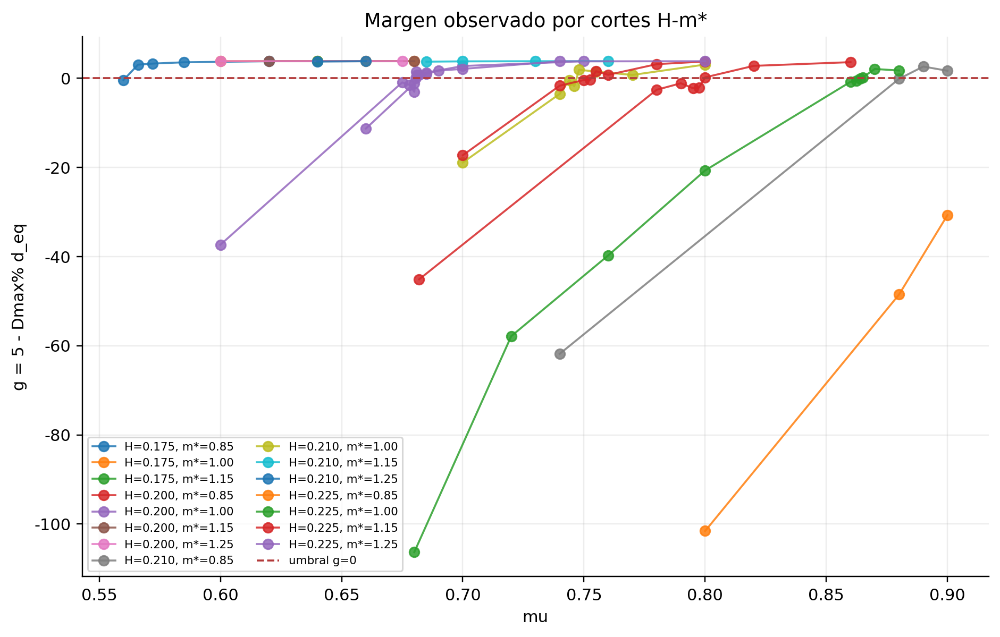
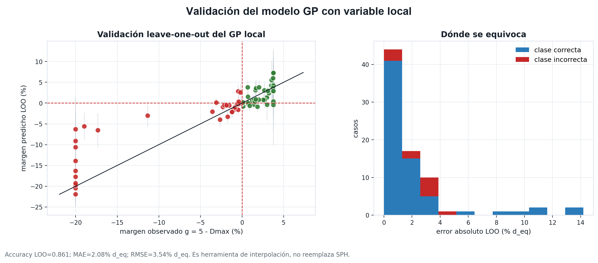

Modelo GP de frontera e incertidumbre
Modelo de interpolacion para estimar la frontera de inicio de movimiento y priorizar zonas de incertidumbre.
Qué predice el modelo
El modelo GP interpola el margen g = 5 - Dmax. Si g > 0, el desplazamiento queda bajo el umbral de movimiento; si g < 0, el caso supera el umbral. La incertidumbre del GP sirve para decidir donde falta evidencia y para construir una lectura probabilística final.
- Salida
- g = 5 - Dmax margen al umbral
- Modelo
- GP Matern 5/2
- Validación
- LOO accuracy 0.861
- Rol
- interpolacion no reemplaza SPH
Modelo con H_dam




Migración hacia variables locales

La formulacion local no cambia la evidencia SPH; cambia la forma de expresar la entrada hidráulica para que el resultado sea más útil fuera del caso dam-break.